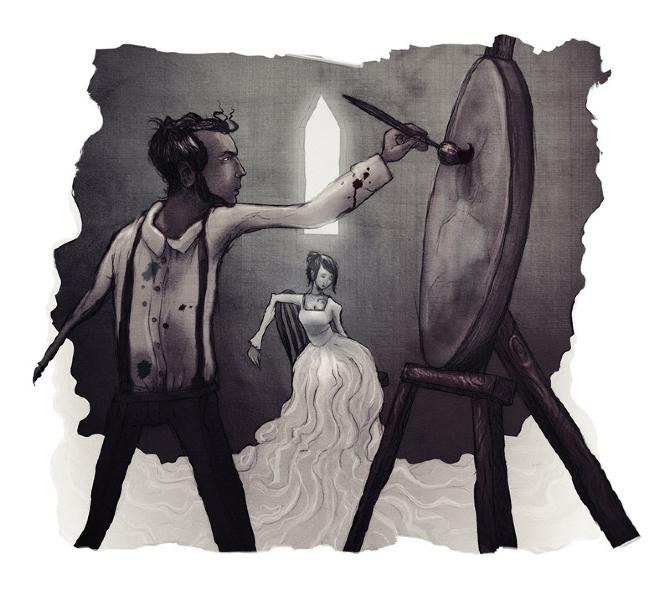

Post #1
O RETRATO OVAL - Edgar Allan Poe
O retrato Oval
O castelo em que meu criado se aventurara a forçar entrada, em lugar de deixar-me passar uma noite ao relento, gravemente ferido como eu estava, era um daqueles edifícios mesclados de soturnidade e grandeza que por muito tempo carranquearam entre os Apeninos, tanto na realidade quanto na imaginação da Sra. Radcliffe. Ao que tudo indicava, fora abandonado havia pouco e temporariamente. Acomodamo-nos num dos quartos menores e menos suntuosamente mobiliados, que ficava num remoto torreão do edifício. Sua decoração era rica, porém esfarrapada e antiga. As paredes estavam forradas com tapeçarias e ornadas com diversos e multiformes troféus heráldicos, juntamente com um número inusual de espirituosas pinturas modernas em molduras de ricos arabescos dourados. Por essas pinturas, que pendiam das paredes não só de suas principais superfícies, mas de muitos recessos que a arquitetura bizarra do castelo fez necessários, por essas pinturas meu delírio incipiente, talvez, fizera-me tomar interesse profundo; de modo que ordenei a Pedro fechar os pesados postigos do quarto – visto que já era noite –, acender um alto candelabro que se encontrava à cabeceira de minha cama e abrir amplamente as cortinas franjadas de veludo negro que a envolviam. Desejei que tudo isso fosse feito para que pudesse abandonar-me, ao menos alternativamente, se não adormecesse, à contemplação das pinturas e à leitura atenta de um pequeno volume encontrado sobre o travesseiro que se propunha a criticá-las e descrevê-las.
Por longo, longo tempo li, e com devoção e dedicação contemplei-as. Rápidas e gloriosas, as horas voavam e a meia-noite profunda veio. A posição do candelabro desagradava-me, e estendendo a mão com dificuldade, em vez de perturbar meu criado adormecido, ajeitei-o a fim de lançar seus raios de luz mais em cheio sobre o livro.
Mas a ação produziu um efeito completamente imprevisto. Os raios das numerosas velas (pois eram muitas) agora caíam num nicho do quarto que até o momento estivera mergulhado em profunda sombra por uma das colunas da cama. Assim, vi sob a luz vívida um quadro não notado antes. Era o retrato de uma jovem, quase mulher feita. Olhei a pintura apressadamente e fechei os olhos. Não foi a princípio claro para minha própria percepção por que fiz isso. Todavia, enquanto minhas pálpebras permaneciam dessa forma fechadas, revi na mente a reação de fechá-las. Foi um movimento impulsivo para ganhar tempo para pensar – para certificar-me de que minha vista não me enganara –, para acalmar e dominar minha fantasia para uma observação mais calma e segura. Em poucos momentos, novamente olhei fixamente a pintura.
O que agora via, certamente não podia e não queria duvidar, pois o primeiro clarão das velas sobre a tela dissipara o estupor de sonho que me roubava os sentidos, despertando-me imediatamente à realidade.
O retrato, já o disse, era o de uma jovem. Uma mera cabeça e ombros, feitos à maneira denominada tecnicamente de vinheta, muito ao estilo das cabeças favoritas de Sully. Os braços, o busto e as pontas dos radiantes cabelos dissolviam-se imperceptivelmente na vaga mas profunda sombra que formava o fundo do conjunto. A moldura era oval, ricamente dourada e filigranada à mourisca. Como objeto artístico, nada poderia ser mais admirável do que aquela pintura em si. Mas não seria a elaboração da obra nem a beleza imortal daquela face o que tão repentinamente e com veemência comovera-me. Tampouco teria minha fantasia, sacudida de seu meio-sono, tomado a cabeça pela de uma pessoa viva. Vi logo que as peculiaridades do desenho, do vinhetado e da moldura devem ter dissipado instantaneamente tal idéia – e até mesmo evitado sua cogitação momentânea. Pensando seriamente acerca desses pontos, permaneci, talvez uma hora, meio sentado, meio reclinado, com minha vista pregada ao retrato. Enfim, satisfeito com o verdadeiro segredo de seu efeito, caí de costas na cama. Descobrira o feitiço do quadro numa absoluta naturalidade de expressão, a qual primeiro espantou-me e por fim confundiu-me, dominou-me e aterrorizou-me. Com profundo e reverente temor, recoloquei o candelabro em sua posição anterior. Sendo a causa de minha profunda agitação colocada assim fora de vista, busquei avidamente o volume que tratava das pinturas e suas histórias. Dirigindo-me ao número que designava o retrato oval, li as vagas e singulares palavras que se seguem:
“Era uma donzela de raríssima beleza, não mais encantadora do que cheia de alegria. Má foi a hora em que viu, amou e desposou o pintor. Ele, apaixonado, estudioso, austero, e tendo já na sua Arte uma esposa; ela, uma donzela de raríssima beleza, não mais encantadora do que cheia de alegria; toda luz e sorrisos, e travessa como uma corça nova; amando e acarinhando todas as coisas; odiando apenas a Arte, sua rival; temendo só a paleta, os pincéis e outros desfavoráveis instrumentos que a privavam do rosto de seu amado. Era, portanto, uma coisa terrível para essa dama ouvir o pintor falar de seu desejo de retratar justo sua jovem esposa. No entanto, ela era humilde e obediente, e posou submissa por muitas semanas na escura e alta câmara do torreão, onde a luz caía somente do teto sobre a pálida tela. Mas ele, o pintor, glorificava-se com sua obra, que continuava de hora a hora, dia a dia. E era um homem apaixonado, impetuoso e taciturno, que se perdia em devaneios; de maneira que não queria ver que a luz espectral que caía naquele torreão isolado debilitava a saúde e a vivacidade de sua esposa, que definhava visivelmente para todos, exceto para ele. Contudo, ela continuava a sorrir imóvel, docilmente, porque viu que o pintor (que tinha grande renome) adquiriu um fervoroso e ardente prazer em sua tarefa, e trabalhava dia e noite para pintar a que tanto o amava, aquela que a cada dia ficava mais desalentada e fraca. E, em verdade, alguns que viam o retrato falavam, em voz baixa, de sua semelhança como de uma poderosa maravilha, e uma prova não só da força do pintor como de seu profundo amor pela qual ele pintava tão insuperavelmente bem. Finalmente, como o trabalho aproximava-se de sua conclusão, ninguém mais foi admitido no torreão, pois o pintor enlouquecera com o ardor de sua obra, raramente desviando os olhos da tela, mesmo para olhar o rosto de sua esposa. Não queria ver que as tintas que espalhava na tela eram tiradas das faces da que posava junto a ele. E quando muitas semanas nocivas passaram e pouco restava a fazer, salvo uma pincelada na boca e um tom nos olhos, o espírito da dama novamente bruxuleou como a chama de uma lanterna. Então, a pincelada foi dada e o tom aplicado, e, por um momento, o pintor deteve-se extasiado diante da obra em que trabalhara. Porém, em seguida, enquanto ainda contemplava-a, ficou trêmulo, muito pálido e espantado, exclamando em voz alta: ‘Isto é de fato a própria Vida!’ Voltou-se repentinamente para olhar sua amada: estava morta!